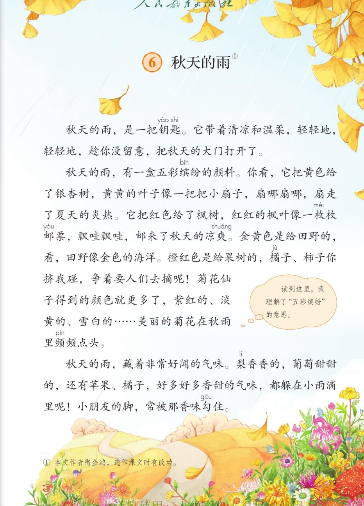
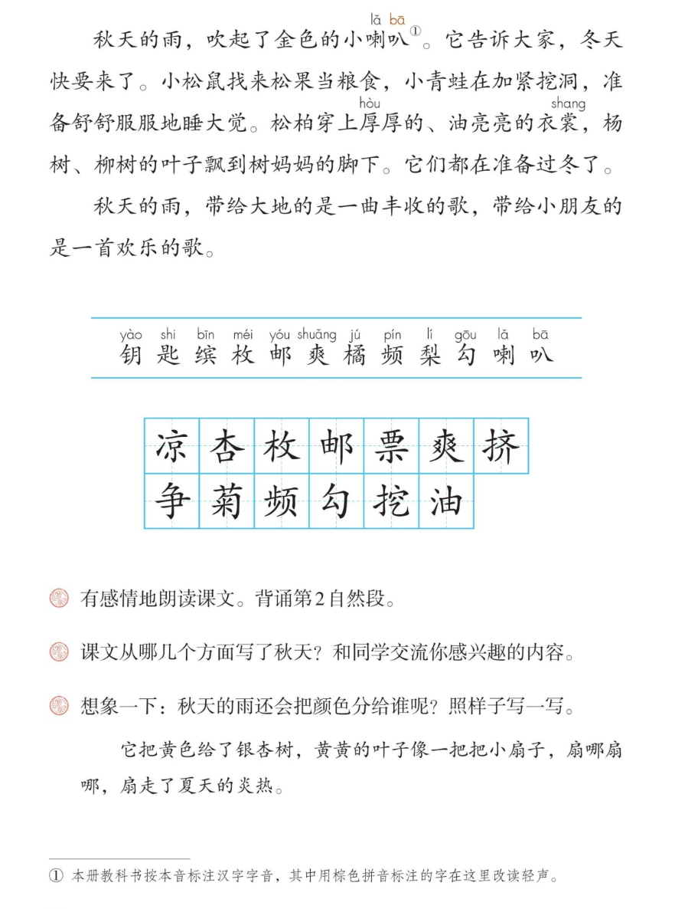
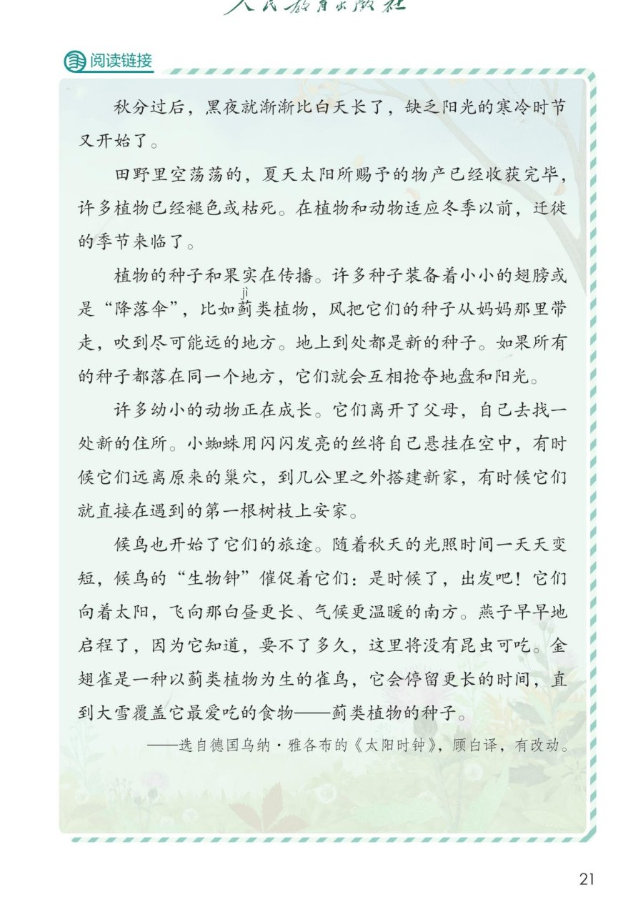

×
🔊 手机听不到声音怎么办？
① 先把手机
媒体音量调大 ，确认没开静音、没连蓝牙耳机；在微信里打开的，点右上角「⋯ → 用浏览器打开」。
② 还是没声音？到应用商店免费下载
Microsoft Edge 浏览器 （它自带朗读发声），用它打开本页面就能出声。
③ 换了 Edge 仍然没声音，说明这部手机的
硬件/系统不支持 网页朗读（多为老旧机型）；近几年买的新手机一般都能正常播放。
→ 打开声音自检
📖 第 6 课《秋天的雨》· 有声图文带读
统编版语文 · 第二单元·阅读 · 课本 P19~21 · 作者：陶金鸿 · 素养升级版（对标 2022 课标第二学段）
课文 5 个自然段
素养目标 4
会认字 12
会写字 13
听写词 12
深入理解 8 题
本课本领 总分结构·背诵第2自然段
🎧 这样学（可随时点任意一句、一个字、一个词单独听）： ① 听读课文 ——一句一句读，读到哪一句哪一句发光；再试着自己默读 。② 学字词 ——12 个会认字、13 个会写字，点一个读一个（匙、叭注意轻声）。③ 词语·听写 ——听写 12 个词（读两遍→你写→报答案→听示范句），再听 4 组近义词辨析。④ 深入理解 ——8 道题（认知 / 理解 / 运用 / 拓展），先想后看。⑤ 五幅秋景与朗读 ——按顺序听课文五幅画面，再听旁白、秋雨、小动物分角色朗读。🌟 课后要求（教材原话）：有感情地朗读课文。背诵第 2 自然段。
📌 本单元语文要素 ——人文主题：金秋的阳光，洒在树叶上，洒在花瓣上，也洒在我们的心上；阅读：运用多种方法理解难懂的词语 ；习作：学习写日记 。
🀄 文化自信
🀄 文化自信
品味陶金鸿笔下诗意的秋天，感受汉语叠词、比喻之美，热爱大自然。
🗣 语言运用
🗣 语言运用
认识 12 个生字、会写 13 个字；积累“油亮亮、扇哪扇哪”等词语，理解“五彩缤纷”等难懂的词语。
💡 思维能力
💡 思维能力
默读课文，说出课文从哪几个方面写了秋天，理清“总起—分写—总结”的结构。
🎨 审美创造
🎨 审美创造
有感情朗读、背诵第 2 自然段，想象秋天的画面并照样子仿写。
点段前的 ①~⑤ 听整段
🔁 跟读模式：关
👁 隐藏注音（自测用）
字卡上的拼音标的是本课要认的字，读音来自课本生字表
🎤 朗读要求（老师标准） 匙、叭 在词语里读轻声；轻柔 和丰收的欢乐 ，轻轻地、扇哪扇哪、飘哇飘哇要读出画面；想象画面 ：一把钥匙、一盒颜料、好多气味、金色小喇叭；饱满、欢快 。
🤫 默读小提示（边读边想几个方面） 听读 ——点句子听老师读；第二步 默读 ——不出声、不指读，边读边想课文从哪几个方面写了秋天；第三步 想一想 ——难懂的词语用方法理解。
①
秋天的雨，是一把钥匙。
它带着清凉和温柔，轻轻地，轻轻地，趁你没留意，把秋天的大门打开了。
📌 这一段讲：秋天的雨像一把钥匙，趁你没留意，把秋天的大门打开了。
②
秋天的雨，有一盒五彩缤纷的颜料。
你看，它把黄色给了银杏树，黄黄的叶子像一把把小扇子，扇哪扇哪，扇走了夏天的炎热。
它把红色给了枫树，红红的枫叶像一枚枚邮票，飘哇飘哇，邮来了秋天的凉爽。
金黄色是给田野的，看，田野像金色的海洋。
橙红色是给果树的，橘子、柿子你挤我碰，争着要人们去摘呢！
菊花仙子得到的颜色就更多了，紫红的、淡黄的、雪白的……美丽的菊花在秋雨里频频点头。
📌 这一段讲：秋雨有一盒五彩缤纷的颜料：黄给银杏、红给枫树、金黄给田野、橙红给果树，菊花仙子的颜色就更多了。
③
秋天的雨，藏着非常好闻的气味。
梨香香的，葡萄甜甜的，还有苹果、橘子，好多好多香甜的气味，都躲在小雨滴里呢！
小朋友的脚，常被那香味勾住。
📌 这一段讲：秋雨藏着好闻的气味：梨香、葡萄甜，小朋友的脚常被香味勾住。
④
秋天的雨，吹起了金色的小喇叭。
它告诉大家，冬天快要来了。
小松鼠找来松果当粮食，小青蛙在加紧挖洞，准备舒舒服服地睡大觉。
松柏穿上厚厚的、油亮亮的衣裳，杨树、柳树的叶子飘到树妈妈的脚下。
它们都在准备过冬了。
📌 这一段讲：秋雨吹起金色的小喇叭告诉大家冬天快来：小动物储粮挖洞，树木落叶，都在准备过冬。
⑤
秋天的雨，带给大地的是一曲丰收的歌，带给小朋友的是一首欢乐的歌。
📌 这一段讲：秋雨带给大地丰收的歌，带给小朋友欢乐的歌。
🤔 想一想（点我可跳过）
点一张图，听读整页

第 19 页 · 课文（上）

第 20 页 · 课文（下）与课后练习

第 21 页 · 阅读链接
📖 人教版《语文》三年级上册 · 课本第 19~21 页 · 图片仅供个人学习，版权归人民教育出版社所有
📚 注释① 本文作者陶金鸿 ，选作课文时有改动。
💭 教材旁注气泡（P19） ：“读到这里，我理解了五彩缤纷 的意思。”——想一想：他是从哪些词理解的？
📝 注释①（P20 页脚） 本册教科书按本音标注汉字字音，其中用棕色拼音标注的字在这里改读轻声 （如“衣裳”的“裳”、“喇叭”的“叭”）。
🔊 课后题 1
🍂 课后题 2
🎨 课后题 3
《太阳时钟》：科学的秋天
🔗 阅读链接 迁徙 的季节来临了。种子和果实在传播 。许多种子装备着小小的翅膀或是“降落伞”，比如蓟类植物，风把它们的种子从妈妈那里带走。许多幼小的动物正在成长，它们离开了父母，自己去找一处新的住所。候鸟也开始了它们的旅途 ，向着太阳，飞向那白昼更长、气候更温暖的南方。
点一个字，听读音、词语和在课文里的句子（匙、叭注意轻声）
结构、部首、笔画与书写提示为通用规范，供参考，以教材和老师的指导为准
凉liáng
凉爽
左右 · 冫 · 10画
两点水写得靠上，右边的京字上点居中，口字写小。
杏xìng
银杏
上下 · 木 · 7画
上面的口字要写扁，下面的木字撇捺舒展，托住上面。
枚méi
一枚枚
左右 · 木 · 8画
木字旁的捺变成点，右边的反文旁撇横撇捺要舒展。
邮yóu
邮票
左右 · 阝 · 7画
左边的由字竖写在正中，右边的软耳旁竖画要写得长。
票piào
邮票
上下 · 示 · 11画
上面的西字头要写得扁，盖住下面的示字，示字横竖写稳。
爽shuǎng
凉爽
独体 · 大 · 11画
大字横长撇捺开，四个小叉排列匀称，别漏写。
挤jǐ
拥挤
左右 · 扌 · 9画
提手旁写窄，右边的齐字上横撇要紧凑，撇捺展开。
争zhēng
争取
上下 · ⺈ · 6画
上面的撇折要写小，中间横钩要展，竖钩写在正中。
菊jú
菊花
上下 · 艹 · 11画
草字头写得扁，下面的勹要包住米字，米字最后一笔变点。
频pín
频频
左右 · 页 · 13画
左边步字右下要多写一点，别漏；右边页字要写得宽。
勾gōu
勾住
半包围 · 勹 · 4画
横折钩要有力地包住里面，里面的撇折和点靠下写。
挖wā
挖洞
左右 · 扌 · 9画
提手旁写窄，右边上面是穴字头，下面的横折弯钩要写稳。
油yóu
油亮亮
左右 · 氵 · 8画
三点水呈弧形排列，右边的由字竖画写在正中。
点一行，听读这一组词语（扇哪扇哪的扇读第一声）
扇 扇子 扇哪扇哪 扇风
票 邮票 车票 门票
油 油亮亮 加油 石油
频 频频 频繁
读两遍 → 你在纸上写 → 报答案 → 听示范句
准备听写 · 共 12 个词
○ ○ ○
点下面的「开始听写」，听到一个词就写一个词。
▶ 开始听写
🔁 再读一遍
👁 看答案
点词听读，点句子听示范句，再自己说一句
1 凉爽 课文词
示范句：秋天的雨邮来了凉爽。
✏️ 我也能说：什么凉爽。
2 银杏 课文词
示范句：银杏的叶子黄黄的。
✏️ 我也能说：什么黄黄的。
3 一枚枚 课文词
示范句：红红的枫叶像一枚枚邮票。
✏️ 我也能说：什么像一枚枚什么。
4 邮票 课文词
示范句：枫叶像一枚枚邮票。
✏️ 我也能说：什么像邮票。
5 拥挤 课文词
示范句：橘子柿子你挤我碰。
✏️ 我也能说：什么挤来挤去。
6 争取 课文词
示范句：果实争着要人们去摘。
✏️ 我也能说：谁争取什么。
7 菊花 课文词
示范句：菊花在秋雨里频频点头。
✏️ 我也能说：菊花怎么样。
8 频频 课文词
示范句：菊花频频点头。
✏️ 我也能说：谁频频做什么。
9 勾住 课文词
示范句：香味常把脚勾住。
✏️ 我也能说：什么勾住了什么。
10 挖洞 课文词
示范句：小青蛙加紧挖洞。
✏️ 我也能说：谁挖洞。
11 油亮亮 课文词
示范句：松柏穿上油亮亮的衣裳。
✏️ 我也能说：什么油亮亮。
12 松果 课文词
示范句：小松鼠找来松果当粮食。
✏️ 我也能说：谁找松果。
相同点 / 不一样在哪 / 各造一句
温柔 — 温和
相同：都表示态度、性情让人舒服。
不一样：温柔 偏重轻柔体贴；温和 偏重不急不躁，也可形容气候。
温柔：秋雨带着清凉和温柔。
留意 — 注意
相同：都表示用心去看、去想。
不一样：留意 偏重留心、不放过；注意 更常用于提醒。
留意：趁你没留意，秋天的大门打开了。
舒服 — 舒适
相同：都表示身体或心情舒畅。
不一样：舒服 更口语；舒适 更书面，常形容环境。
舒服：舒舒服服地睡大觉。
欢乐 — 快乐
相同：都表示高兴、开心。
不一样：欢乐 常形容场面、歌声；快乐 偏重心情。
欢乐：一首欢乐的歌。
ABB式词语 油亮亮 亮晶晶 湿漉漉
动词叠用 扇哪扇哪 飘哇飘哇 你挤我碰
比喻·拟人 秋雨是一把钥匙——菊花仙子频频点头——脚被香味勾住
总分结构 每段第一句都是总起：是一把钥匙 / 有一盒颜料 / 藏着气味 / 吹起小喇叭 / 是一首歌
点一张卡，听一种方法
这一课新鲜的词语和句子最多——五彩缤纷、频频点头、香味勾住 ……用四样法宝一个一个来“破案”。
📖 方法一·结合旁注
教材气泡说：读到这里，我理解了“五彩缤纷”的意思——看看颜色都分给了谁。
🔗 方法二·联系上下文
五彩缤纷——黄、红、金黄、橙红、紫红、淡黄、雪白，颜色又多又好看。
🔍 方法三·查字典
“钥匙”——查一查，是开锁的东西；秋雨就像钥匙，打开了秋天的大门。
👀 方法四·联系生活
“你挤我碰”——想想果树上挤在一起的橘子柿子，像不像赶集的人们。
💎 新鲜句式·动词叠用
扇哪扇哪、飘哇飘哇——动作慢慢展开，画面就动起来了。
🎭 新鲜写法·拟人
菊花仙子频频点头、脚被香味勾住——秋雨把秋天写活了。
✏️ 圈画交流
把你喜欢的句子画下来（课后题1），说说它新鲜在哪里。🌈 答案不唯一。
标「答案不唯一」的题，说得有道理都对
认知 这篇课文的作者是谁？看解析
🤔 想一想
解析：
本文作者陶金鸿，选作课文时有改动（课本注释①）。
🌈 答案不唯一，说得有道理都对
认知 课文从哪几个方面写了秋天？（课后题2）看解析
🤔 想一想
解析：
五个方面：是一把钥匙（打开秋天的大门）、有一盒五彩缤纷的颜料、藏着好闻的气味、吹起金色的小喇叭（告诉大家准备过冬）、是一曲丰收的歌一首欢乐的歌。🌈 交流你感兴趣的内容就行。
🌈 答案不唯一，说得有道理都对
理解 “五彩缤纷”是什么意思？你是从哪些词看出来的？（教材旁注气泡的问题）看解析
🤔 想一想
解析：
五彩缤纷是颜色又多又好看。从黄黄的叶子、红红的枫叶、金色、橙红色、紫红的、淡黄的、雪白的……看出来颜色又多又鲜艳。
🌈 答案不唯一，说得有道理都对
理解 “黄黄的叶子像一把把小扇子”“红红的枫叶像一枚枚邮票”，这样写好在哪里？看解析
🤔 想一想
解析：
把银杏叶比作小扇子，扇走了炎热；把枫叶比作邮票，邮来了凉爽——又像又动起来，秋天就变得又凉快又可爱。
🌈 答案不唯一，说得有道理都对
理解 “小朋友的脚，常被那香味勾住”，“勾”字好在哪里？看解析
🤔 想一想
解析：
一个“勾”字，把香味写成了有一只小手，轻轻拉住了小朋友的脚步——写出了气味的诱人。
🌈 答案不唯一，说得有道理都对
运用 想象一下：秋天的雨还会把颜色分给谁呢？照样子写一写。（课后题3）看解析
🤔 想一想
解析：
示范：它把红色给了苹果，红红的苹果像一个个小灯笼，照啊照啊，照亮了秋天的果园。🌈 答案不唯一，用上“它把__给了__，__像__”的句式就行。
🌈 答案不唯一，说得有道理都对
运用 有感情地朗读课文，背诵第 2 自然段。看解析
🤔 想一想
解析：
背诵窍门：记住颜色顺序——黄给银杏、红给枫树、金黄给田野、橙红给果树、菊花的颜色更多，一句一句连起来。
🌈 答案不唯一，说得有道理都对
拓展 阅读链接《太阳时钟》：秋分之后，大自然发生了哪些变化？和课文里的秋天比一比。看解析
🤔 想一想
解析：
阅读链接写种子传播、小动物找新家、候鸟南飞，都在为冬天做准备；课文写秋雨带来的颜色和气味。一个是科学的秋天，一个是文学的秋天。🌈 说出自己的发现就行。
🌈 答案不唯一，说得有道理都对
💬 讲述支架：先 一把钥匙打开秋天 → 再 一盒颜料染彩色 → 接着 藏着好闻的气味 → 然后 吹起小喇叭准备过冬 → 最后 是一曲丰收的歌、一首欢乐的歌。
点一个角色，听他（她）的台词
🎭 旁白一
秋天的雨，是一把钥匙。它带着清凉和温柔，轻轻地，轻轻地，趁你没留意，把秋天的大门打开了。
💬 读出秋雨的轻柔与丰收的欢乐 ：轻轻地读得慢，丰收的歌读得饱满
🎭 秋雨
秋天的雨，有一盒五彩缤纷的颜料。它把黄色给了银杏树，把红色给了枫树，金黄色是给田野的，橙红色是给果树的。秋天的雨，藏着非常好闻的气味，梨香香的，葡萄甜甜的，小朋友的脚，常被那香味勾住。
💬 读出秋雨的轻柔与丰收的欢乐 ：轻轻地读得慢，丰收的歌读得饱满
🎭 小动物
秋天的雨，吹起了金色的小喇叭。小松鼠找来松果当粮食，小青蛙在加紧挖洞，准备舒舒服服地睡大觉。松柏穿上厚厚的、油亮亮的衣裳。它们都在准备过冬了。
💬 读出秋雨的轻柔与丰收的欢乐 ：轻轻地读得慢，丰收的歌读得饱满
🎭 小老师
背诵小窍门：第 2 自然段按颜色顺序背——黄给银杏树（小扇子）、红给枫树（邮票）、金黄给田野（海洋）、橙红给果树（你挤我碰）、菊花仙子颜色更多。最后一段是总结：丰收的歌、欢乐的歌。
💬 读出秋雨的轻柔与丰收的欢乐 ：轻轻地读得慢，丰收的歌读得饱满
每题给自己打 1~3 颗星
1. 我能正确认读本课 12 个会认字（匙、叭读轻声）。 ☆ ☆ ☆
2. 我能正确书写 13 个会写字。 ☆ ☆ ☆
3. 我能用联系上下文等方法理解“五彩缤纷”等难懂的词语。 ☆ ☆ ☆
4. 我能说出课文从哪几个方面写了秋天，并背诵第 2 自然段。 ☆ ☆ ☆
5. 我能照样子写一写“秋天的雨还会把颜色分给谁”。 ☆ ☆ ☆
✍️ 想象一下：秋天的雨还会把颜色分给谁呢？照样子写一写。 例 ：它把黄色给了银杏树，黄黄的叶子像一把把小扇子，扇哪扇哪，扇走了夏天的炎热。它把__给了__，__像__ ”的句式，写出一两个新鲜的比喻。示范 ：它把红色给了苹果，红红的苹果像一个个小灯笼，照亮了秋天的果园。